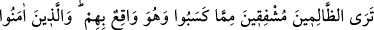
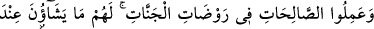
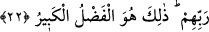
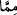

insan için yağdaki zehir gibidir. Kişi ise bu durumu fark edemez. Özellikle bu kişi sevgi
ve muhabbet ehlinden ise onun helaki leziz yemekte ve hoş uykudadır. Nefsin ıslahı ve
tezkiyesi için başarı Allah’tandır.
22. Yaptıkları şeyler başlarına gelirken zalimlerin, korkudan titrediklerini
göreceksin. İman edip iyi işler yapanlar da cennet bahçelerindedirler. Rablerinin
yanında onlara diledikleri her şey vardır. İşte büyük lutuf budur.
Görebilme özelliği ve yetkisi olan ey insan! Dünyada “yaptıkları” kötü “işler”in
vebâli ve cezası “başlarına inerken zâlimlerin” müşriklerin kıyâmette “korkudan
titrediklerini göreceksin.” Çünkü yaptıklarının kötü karşılığı onlara yapışacaktır.
Bunda herhangi bir şüphe yoktur. Böyle bir durumun gerçekleşmesinden ister korksunlar
ister korkmasınlar fark etmez, Allah’ın emri mutlaka vuku bulacaktır.
kelimesindeki “ /min” harfi “talil” yani illet ve sebep beyan etmek içindir. Bunun
böyle anlaşılması daha mânidâr ve tehdid ifâde etmede daha etkilidir.
Müfti Sa’dî şöyle der: Âhirette durum dünyadakinin tam tersine olacaktır. Dünyada
kendilerini güvende hissedenler âhirette korkulu ve endişeli olacaklardır. Dünyada
korkulu ve endişeli olanlar ise âhirette emin olacaklardır.
Mesnevi’de şöyle denilir:
“Korkmayın!” (Fussilet, 41/30) emri korkanlar için bir rızıktır.
Bu, korkan o kimseye lâyık bir azıktır.
Kim korkarsa ona güven verirler,
Hangi gönül korkmuşsa onu rahatlatırlar.
Korku bilmeyen kimseye nasıl “korkma” dersin?
Onun derse ihtiyacı yok, ne diye ders verirsin?”
Âyette şu inceliklere işâret vardır: Hevâ ve şehevât ehlinin azâbı başlarına
yıkılacaktır. Bu durum ya dünyada nefis tezkiyesi için yapılan riyazât ve çeşitli
mücâhedelerle olacak; bu şekilde nefsini kötü vasıflardan temizleyip iyi vasıflarla
süslemekle gerçekleşecektir. Yahut nefsini temizlemek için âhirette cehennem ateşine
girmekle olacaktır. Tabiî ki dünya azâbı daha hafiftir. Öyleyse vakit geçmeden, fırsat
kaçmadan çalışmak lâzımdır.
“Îman edip iyi işler yapanlar” beşerî ve zararlı unsurları, nefs ü hevâyı kırmak, nefsi
tezkiye etmek, kalbi tasfiye etmek, ruhu güzel duygu ve ahlâkla süslemek sûretiyle